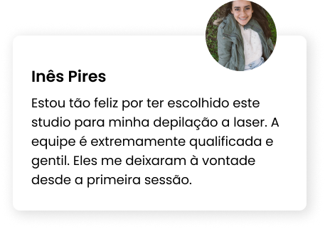
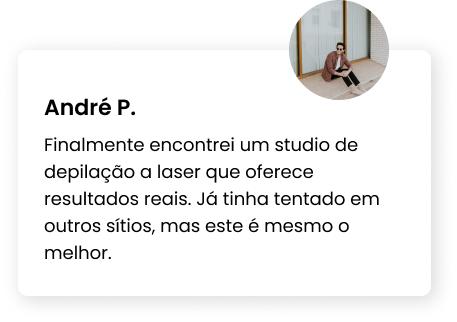
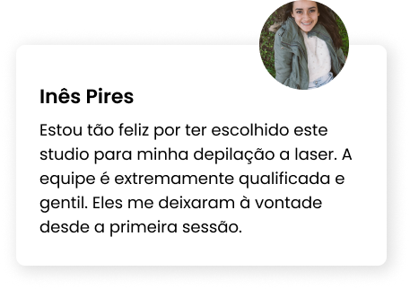
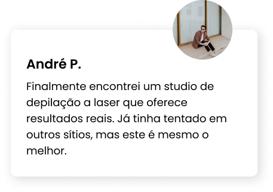

Na Studio Laser somos especialistas em depilação a laser. Sabemos como é importante ter a tranquilidade de estar nas mãos dos melhores profissionais quando quer realizar um tratamento de depilação a laser.
Depilação a Laser é para todos!
 




perguntas frequentes
Quem realiza a depilação a laser?
Técnicas especializadas que marcam as diretrizes a serem seguidas por um controle personalizado e que garantem a segurança e o bem-estar do cliente. A técnica determina o tipo de laser a ser usado em função das características da pele, pêlo e área a ser tratada. O laser é sempre usado para garantir um tratamento eficaz e seguro.
A Depilação laser é adequada a todo o público? Que fotótipos se podem depilar?
A depilação laser é recomendada a pessoas de todas as idades. A tipologia mais eficaz para a depilação laser é a combinação de pele clara e pêlo escuro. No entanto, e graças ao uso da mais recente tecnologia usada na Studio Laser, podemos depilar peles mais morenas, escuras ou negras
Quais são os efeitos da depilação laser?
Durante uma depilação a laser é normal sentir uma leve sensibilidade ao calor, emitido pelo laser. Após a sessão de depilação, é comum o aparecimento de eritema ou vermelhidão na área em causa, pode persistir após a sessão. Todos estes efeitos são normais no procedimento de uma depilação laser
É um tratamento seguro?
Na Studio Laser temos consultas de esclarecimento prévias e gratuitas. Nessa mesma consulta é avaliado o fotótipo do pêlo e da pele, de modo a que a técnica especializada possa operar com o laser mais adequado ao fotótipo do cliente e maximizar o sucesso do tratamento com toda a segurança. Todas as técnicas têm formação contínua especializada sobre depilação laser, que lhes permite operar de uma forma mais eficaz e segura.
Pode-se tratar qualquer área?
Dada a precisão do laser e a segurança exigida, qualquer área do corpo pode ser tratada, em qualquer idade e em qualquer tipo de pele e pêlo, desde as peles mais sensíveis e delicadas às mais escuras.
A depilação laser é aconselhável em casos de foliculite?
A foliculite é uma infeção dos folículos pilosos por bactérias. A depilação laser é recomendada porque elimina os pêlos em casos de foliculite (pêlos encravados) como também reduz a inflamação.